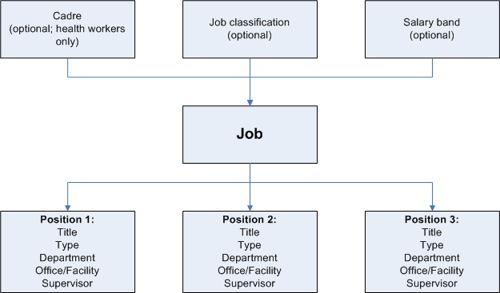
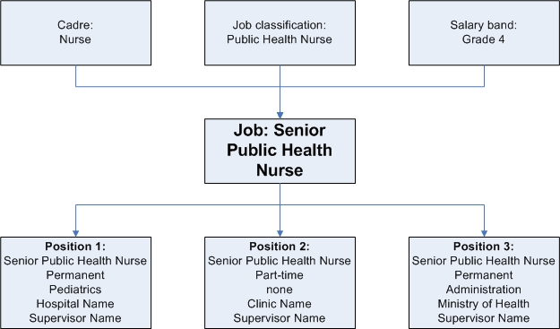

Before Installing iHRIS Manage
{Return to the iHRIS Manage User Manual index page.
Before installing iHRIS Manage, spend some time collecting data about your organization and its employees. This will enable set up of the necessary data structure for entering data into the system. This section gives guidance on the data that should be collected and provides checklists for recording and organizing the data.
There are four checklists to complete to set up iHRIS Manage:
-
Data Setup Checklist
-
Define Geographical Locations
-
Define a Job Structure
-
Set Up Current Positions and Employees
If your organization offers in-service trainings to employees, you may also choose to set up a training program in iHRIS Manage. This module is optional.
Data Setup Checklist
Before entering data into iHRIS Manage, you must configure lists for selecting standard items. Standardizing these selection lists ensures that data can be reported consistently. Complete the following exercises before beginning to identify and gather all the data needed to complete the setup. This exercise should be completed by an HR Manager.
Note: Some data lists are pre-filled when iHRIS Manage is installed. You may use these pre-filled lists as is, or any of these items may be edited to match the standards used in your organization.
Education types and degrees
List all education types (such as high school, college, university, professional) and degrees for each education type (such as diploma, bachelor's degree, master's degree, certificate) to track for job applicants and employees.
Action: Enter all education types and degrees in the system (see Add an education type and Add a degree).
Languages
Do you want to track employees' language skills--their proficiency at reading, writing and speaking non-native languages? List all languages to track.
Action: Enter all languages (see Add a language).
Competency categories and competencies
Is your organization using a competency model to track employee competencies or skills? A competency is any skill in which an employee has been assessed to be competent. For easier organization, related competencies can be grouped under the same competency type, or a category of related competencies. When an employee is assessed for a competency, a competency evaluation level can be selected.
List each competency type and all the competencies that belong in each category. List all the levels of competency evaluation used in your organization.
Action: Enter all competency types and competencies in the system (see Add a competency type and Add a competency). Enter all competency evaluations used by your organization (see Add a competency evaluation.)
Identification types
Identification types are non-changing IDs, such as a Social Security Number, driver's license, passport or national health insurance card, that are used to identify an employee. Identification numbers are entered into the system when a job applicant completes an application and when an employee is hired. The types of identification that are required depend on the laws of your country and the policies of your organization.
List all identification types that will need to be tracked.
Action: Enter all identification types in the system (see Add an identification type).
Benefit types
Will you be tracking special non-salary payments made to employees, such as benefits, allowances, travel advances or bonuses? List all benefit types, or special payments.
Action: Enter all benefits types in the system (see Add a benefit type).
Marital status types
List the types of marital status--such as single, married, divorced and widowed--you need to track for your employees.
Action: Enter all marital status categories in the system (see Add a marital status).
Reasons for departure
List the reasons for departure that you would like to track when employees leave or change positions within the organization.
Action: Enter all reasons for departure in the system (see Add a reason for departure).
Define Geographical Locations
iHRIS Manage can track human resources data by four types of geographical locations. The system reports aggregate data at each level in order to analyze human resources at the national, regional, district and/or county level.

When data with a geographical component is entered in the system, such as an employee's home address or the location of an office or facility, you are first prompted to select a country. The system then displays a list of regions within that country for selection. After selecting a region, the system displays a list of districts within that region, as well as any counties that may have been entered for the district. Choosing the district is required; choosing a county is not, but is useful for tracking data by the smallest geographical subset.
Each office or facility in the organization is linked to a district and, optionally, a county. Each office or facility is assigned a type, which defines the category it belongs in (such as office, hospital or clinic). Positions can then be defined for each office/facility.
Locations Worksheet
Complete the following exercise for each country where employees are located. This will determine the geographical and office/facility data that need to be entered into the system. This exercise should be completed by an HR Manager.
Country name:
Currency (for employee salaries):
Region names:
If you are not tracking data by region, enter one country-wide region, such as "National."
District/state/province names for each region:
County/sector names for each district/state/province (optional):
Offices/facilities in the country and type of facility:
Departments used by the office/facility or by the organization as a whole (optional):
Example Scenarios
The following examples illustrate several scenarios for setting up geographical locations and offices/facilities in the system, depending on your organization's locations and needs.
1) The organization has one office and does not track data regionally.
Create a country with the name of the country where the office is located. For that country, enter any meaningful name to signify the one required region, such as "National." For that region, enter the name of the district, state or province where the office is located. For that district, enter the name of the county or sector where the office is located (optional). Enter one facility type, such as "office," to categorize the office. Create an office and enter a meaningful name for the office, such as "Headquarters." Link it to the country, district and county entered.
2) The organization has several offices or facilities in one country and needs to track data regionally.
Create a country with the name of the country where the offices/facilities are located. Enter the names of the regions where the offices/facilities are located, or all regions in the country. Enter the names of the districts, states or provinces within each region where the offices/facilities are located, or all districts in the country. Enter the names of the counties or sectors within each district where the offices/facilities are located, or all counties in the country (optional). Enter the names of all offices or facilities, assigned to their specific district and county locations, and categorized by the specific facility types you have defined.
3) The organization has several offices or facilities in several countries and may need to track data regionally for some.
Create all countries where offices/facilities are located. For each country where regional data should be tracked, enter the names of the regions within that country. For each country where regional data does not need to be tracked, enter one "region," such as "National." For each defined region, enter the name of at least one district, state or province. Enter the names of counties or sectors within defined districts (optional). Enter the names of all offices or facilities, assigned to their specific country, district and county locations, and categorized by the specific facility types you have defined.
4) The organization has only office but has personnel assigned to work in several different geographical locations.
Create all countries where employees are located. For each country, enter the name of at least one region; if regional data does need to be tracked, enter a meaningful name for one region per country, such as "National." For each region, enter the names of all districts, states or provinces where employees are located. Enter the name of counties or sectors where employees are located within defined districts (optional). Configure the system to globally turn off the offices/facilities feature; all positions will be linked to a geographical location instead. (Requires customization by a programmer.)
Actions: When you have completed this worksheet, enter into the system, in the following order:
-
all countries identified -- at least one must be entered (see Add a country)
-
all regions identified for each country -- at least one region per country (see Add a region)
-
all districts identified for each region -- at least one district per region (see Add a district)
-
all counties identified for each district -- optional (see Add a county)
-
all currencies identified -- at least one must be entered (see Add a currency)
-
all facility types identified -- at least one type must be entered (see Add a facility type)
-
all information about each office or facility in the organization -- at least one office must be entered (see Add an office or facility)
-
all departments identified -- optional (see Add a department)
Define a Job Structure
In iHRIS Manage, a job is defined as a general set of qualifications, duties and responsibilities that one person performs in the organization. Each job has a title, code and description.
A job may be categorized by any of the following:
-
Cadre: a category of health professionals who work for the organization
-
Job classification: a standard job category and code that may or may not include health professionals
-
Salary grade: a grade of pay for a job
All of these categorizations are optional. They are intended to organize jobs and track and report on data in ways that are meaningful for your organization.
There may be multiple instances of the same job. Each instance, which is filled by a single employee performing that job function, is called a position. The position may have the same title as the job, or it may have an additional position title.
Positions may be:
-
Open: No employee currently holds the position, and the organization is actively accepting applications or seeking to hire into the position.
-
Closed: An employee currently holds the position.
-
Discontinued: No employee currently holds the position, and the organization is not seeking to hire into the position, but the position may be reopened at some later date
Each position has one spot on the organizational chart and one supervisor. Each position is located at a particular office or facility. Each position may optionally be assigned a code, department and position type (such as permanent, temporary or part-time).
The following chart illustrates how job data are related in the system:

This is an example of a specific job:

Complete the following exercises to define all cadres, job classifications and salary bands in use in your organization. Then identify each job in the organization and link it to the appropriate cadre, job classification and salary band. This section should be completed by an HR Manager.
Cadres
List all cadres in use in the organization. Cadres refer only to health professionals and should conform to international standards as much as possible. Cadres are optional.
Action: Add all cadres to the system (see Add cadres).
Job classifications
List all job classifications in use in the organization, including a description and a code for each job classification. A job classification is a category used to group similar jobs. Job classifications may be the same as cadres but will also include non-health professionals. Job classifications are optional.
Action: Add all job classifications and corresponding information to the system (see Add job classifications).
Salary grades
List all salary grades in use in the organization. Include the currency, starting salary, midpoint (or market rate) and ending salary for each salary grade. A salary grade defines the pay range for one or more jobs. Salary grades are optional.
Action: Add all salary grades and corresponding information to the system (see Add salary grades).
Currencies also need to be entered into the system (see Add a currency).
Jobs
List all jobs that currently exist in the organization with their cadre, job classification, salary grade, job code and job description. Remember that a job is not the same as a position. Several positions may exist for one job. Once the jobs are entered in the system, at least one position may be created for each job, which may then be linked to an employee.
Action: Enter each job and its corresponding information into the system (see Add jobs).
Salary sources
List all salary sources. A salary source is any distinguishable source of an employee's salary or a special payment or benefit paid to an employee that needs to be tracked. Tracking salary sources is optional.
Action: Enter all salary sources in the system (see Add salary sources).
Position types
List all position types (such as permanent, temporary, consultant, part-time, etc.) to track in the system. Tracking position types is optional.
Action: Enter all position types in the system (see Add position types).
Set Up Current Positions and Employees
Once the standard data lists have been configured in the iHRIS Manage system according to the worksheets "Data Setup Checklist", "Define Geographical Locations" and "Define a Job Structure", you are ready to begin the initial data entry. This involves populating the iHRIS Manage system with all current position and employee information. Print and complete the following checklist first to ensure that all the data is available before entering data into the system. This checklist should be completed by an HR Manager or HR Staff.
Gather position information
A position is an instance of a job that is filled by one employee, is located at one office or facility and has one supervisor. Each position represents a box on the organizational chart. A position may be open or closed. An open position is one for which the organization is currently seeking applicants. A closed position is one to which an employee is currently assigned.
Compile a complete list of all current positions, both open and closed. For all closed positions, you will also need to gather additional information about the employee filling the position.
For each position, gather the following required information:
-
Job -- Each position is categorized under a generic job that has already been defined in the system.
-
Position title -- This may be the same or different as the generic job title.
-
Position code
-
Actual or proposed salary, including the currency in which the salary is paid
-
Facility or office where the position is located
In addition, gather as much of the following information about each position as possible (all of these fields are optional):
-
Position description, if different from or in addition to the job description
-
Salary sources
-
Supervisor's position
-
Department
-
Position type
-
Hiring date
-
Proposed end date, if the position is a short-term or contract position
Action: Enter all positions into the system (see Add positions).
Gather employee information
For each employee, gather the following required information:
-
Full name (first name and surname)
-
Nationality
-
Country and district/state province of residence; county of residence is optional
-
Position
In addition, gather as much of the following information about each employee as is available to you (all of these fields are optional):
-
Date of birth
-
Gender
-
Marital status
-
Number of dependents
-
Identification types and numbers
-
Personal contact information -- mailing address, telephone number(s), fax number, email address
-
Work contact information -- mailing address, telephone number(s), fax number, email address
-
Emergency contact information -- mailing address, telephone number(s), fax number, email address, notes such as emergency contact name and relationship
-
Other contact information -- mailing address, telephone number(s), fax number, email address that do not fit into any of the other contact categories
-
Benefit information -- benefit type, source, currency, amount, start date, end date and recurrence frequency
iHRIS Manage also supports storing the following information about each employee (you may or may not choose to enter this information during the initial data entry process):
-
Educational history -- institutions attended, graduation dates, education types and degrees, and majors
-
Employment history -- previous company names, addresses, telephone numbers, supervisors, reasons for leaving, starting positions, dates and salaries, ending positions, dates and salaries, and job responsibilities
-
Qualifications -- languages and competencies in which the employee is proficient
Action: Enter all employees in the system (see Manage People).
Set Up a Training Program
The in-service training management module is an optional module that can be used to manage in-service training courses offered to employees. Using this module, you can schedule employees to take courses, evaluate employee performance in training courses and assess competencies earned from training. If you choose to use this module, you should gather data about training courses offered to employees to enter in the system. The training program data may be entered by a Training Manager or HR Manager. After initially setting up the training program, you may update training course information or add new courses at any time.
Before you can use this module, you must enable it in the system (see Enable the In-Service Training Management Module).
Training Course Descriptions
There are various ways you can categorize a training course in the training program management module. You can set up course categories. You can assign a status to a course, such as open, closed or full. You will select these descriptors when you enter a training course's details.
You can also select the requestor who asked that an employee be scheduled for a course, such as the employee, their supervisor, human resources, a manager or a donor. Finally, you can set up options for evaluations of an employee's performance in a training course, such as Pass, Fail or Incomplete. You will select these descriptors when scheduling a training course for an employee.
Action: Determine which of these descriptions you want to use and what the standards should be for your organization. Enter each into the system (see Set up the In-Service Training Management Module.)
Training Institutions
If you like, you can record information about institutions that offer training courses in the system. For each training institution, you can record the name, its geographical location, and its mailing address, telephone numbers, fax number, email address and primary contact person. You can then select the training institution giving each course when you enter the training course's details.
Action: Enter all training institutions into the system (see Add a training institution).
Training Funders
You can also record information about the organization or donor that is funding a training course. For each training funder, you can record the name, its geographical location, and its mailing address, telephone numbers, fax number, email address and primary contact person. You can then select the training institution giving each course when you enter the training course's details.
Action: Enter all training funders into the system (see Add a training funder).
Continuing Education Courses
Continuing education courses are courses that provide official continuing education units (CEUs) to an employee, in order to renew a license, for instance. Continuing education courses may be associated with training courses if an employee can earn CEUs by taking the course. A training course may include one or more continuing education courses. You can enter the name and the number of credit hours (CEUs) earned in each continuing education course. You can then associate the continuing education course with its training course when adding the training course details.
Action: Enter all continuing education courses into the system (see Add a continuing education course).
Training Courses
For each in-service training course, collect the Name of the course, its topic and the schedule of classes offered, including the maximum number of students and site for each course. You may also record the course category, the training institution offering the course, the training funders funding the course, CEUs (continuing education units) and competencies provided by the course, the names of the instructors, and the geographical location where each class is being given.
Action: Enter all training courses and their schedules into the system (see Add a training course and Schedule a course).
Return to the iHRIS Manage User Manual index page.
Source
Help page shipped in ihris-suite-4.3.3 (GPL-3.0, © IntraHealth International), sha256 f0a8408cc8e3951600706873665b8ef7c75f62179cea2a747226adcf27469e56, at:
ihris-manage/modules/manage-help/static/help/ihris_before_installing_ihris_manage.htmlihris-manage/modules/manage-help/static/help/ihris_before_installing_ihris_manage_4.0.htmlihris-qualify/modules/qualify-help/static/help/ihris_before_installing_ihris_manage.htmlihris-qualify/modules/qualify-help/static/help/ihris_before_installing_ihris_manage_4.01.html